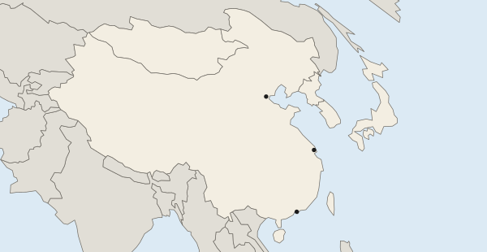

Changes as a Result of the World Economy
Cheaper transport and communication let firms outsource work, so older industrial regions deindustrialized while newly industrialized countries grew, often in special economic zones.
Part 1 · Hook
Why this matters
Part 2 · Before you start
What this builds on
Part 3 · Prerequisite check
Quick check before you start
1. What are economies of scale?
- Lower cost per item when producing in large amounts
- Taxes on imports
- Small loans to women
- Moving goods between ships and trains
Show the answer
Big production runs spread fixed costs, so each item costs less.
- Correct: Lower cost per item when producing in large amounts:
- Taxes on imports:
- Small loans to women:
- Moving goods between ships and trains:
2. What does a trade bloc do?
- Lowers tariffs among its member countries
- Lends to governments in debt
- Sets the HDI
- Moves factories to the periphery
Show the answer
A trade bloc cuts trade barriers among its members.
- Correct: Lowers tariffs among its member countries:
- Lends to governments in debt:
- Sets the HDI:
- Moves factories to the periphery:
Part 4 · See it
See it first
Part 5 · Step by step
How it works, step by step
- Shipping and communication get cheaperfirms outsource work to places with lower costs
- Factories leave older industrial cities such as Detroitthose regions deindustrialize, and the multiplier effect costs more jobs
- Governments open special economic zones such as Shenzhenfactories arrive, migrants follow, and newly industrialized countries grow
- Firms split design, parts and assembly among countriesan international division of labor forms, run by flexible post-Fordist methods such as just-in-time
Part 6 · Key ideas
Key ideas
- Outsourcing moves work to other firms, often abroad; deindustrialization is a region's loss of factory jobs.
- Newly industrialized countries such as South Korea grew through export factories; special economic zones (China's Shenzhen, Mexico's maquiladoras) drew them.
- International division of labor: stages of one product in different countries. Post-Fordism: flexible small batches and just-in-time delivery, unlike Fordism's mass production.
- Agglomeration: many firms cluster for shared benefits (Silicon Valley). Growth pole: one key project spreads growth outward (BMW near Spartanburg).
- The multiplier effect spreads gains when a plant opens and losses when it closes.
Part 7 · Misconception
A common mistake
The wrong idea: Agglomeration and a growth pole are the same thing.
What actually happens: Agglomeration is many firms clustering because being close helps them. A growth pole is one key industry or project whose growth spreads out to the region around it. A growth pole can grow into an agglomeration.
Part 8 · Check yourself
Check yourself
Exam-style questions. Anything you miss goes into your review queue.
Map
China's first coastal zones for foreign investment

1. Which statement describes the pattern of the zones on the map?
- They are spread evenly
- They cluster in the deserts and mountains of western China
- They line China's east and southeast coast
- They follow China's long land border with India
Show the answer
A strong description says where: all three places lie along the east and southeast coast, none in the interior.
- They are spread evenly: The marks sit on the coast; the interior and west have none.
- They cluster in the deserts and mountains of western China: Western China has no marks at all.
- Correct: They line China's east and southeast coast: Right: all three marks, from Tianjin in the north to Shenzhen in the south, are on the coast.
- They follow China's long land border with India: The border with India is in the far southwest, far from every mark.
2. Why did China place these zones on the coast?
- Ports made shipping parts and exports cheap
- The coast had the most farmland that needed protecting
- Coastal land was far too steep for any farming
- Interior provinces were closed to people from elsewhere
Show the answer
Export industry needs ports, and the coast was close to foreign investors and markets, so the zones had the best situation there.
- Correct: Ports made shipping parts and exports cheap: Right: export factories need ports, and Shenzhen sat next to investors in Hong Kong.
- The coast had the most farmland that needed protecting: The zones were for factories, not farm protection.
- Coastal land was far too steep for any farming: Most of these coasts are low-lying; the pull was ports and trade.
- Interior provinces were closed to people from elsewhere: People could move within China; the coast was chosen for its situation.
3. What did a special economic zone such as Shenzhen offer foreign firms?
- Lower taxes and fewer rules
- Higher tariffs on parts brought in from abroad
- A ban on selling goods to other countries
- Free microloans to farmers
Show the answer
An SEZ is an area with lower taxes, fewer rules and cheaper land for firms making goods for export.
- Correct: Lower taxes and fewer rules: Right: SEZs draw firms with lower taxes, fewer rules and cheap land.
- Higher tariffs on parts brought in from abroad: SEZs cut taxes on imported parts; they did not raise them.
- A ban on selling goods to other countries: SEZ factories mainly made goods for export.
- Free microloans to farmers: SEZs targeted factories and foreign firms, not farm loans.
4. Which outcome is most likely as factories grew in the marked zones from the 1980s?
- Workers left for farms
- Inland migrants came; the zones grew
- Coastal cities shrank as firms left for the interior
- Interior provinces drew most of the new factories
Show the answer
Factory jobs in the coastal zones pulled rural-to-urban migrants from inland, so the zones grew into large cities.
- Workers left for farms: Factory jobs pulled people toward the zones, not away from them.
- Correct: Inland migrants came; the zones grew: Right: rural-to-urban migration from inland provinces made cities such as Shenzhen grow fast.
- Coastal cities shrank as firms left for the interior: The firms came to the coast; the cities grew.
- Interior provinces drew most of the new factories: The new factories went to the coastal zones.
5. Hundreds of tech firms cluster in Silicon Valley, California, sharing engineers, investors and ideas. Which concept fits best, and why?
- A growth pole, because one planned project drives the region
- Agglomeration, because many firms gain from being close
- Deindustrialization, because the firms make few goods
- Outsourcing, because the firms are in one place
Show the answer
Agglomeration is many firms clustering for shared benefits; a growth pole is one key project spreading growth outward.
- A growth pole, because one planned project drives the region: A growth pole is one key project whose growth spreads out; Silicon Valley is many firms clustering.
- Correct: Agglomeration, because many firms gain from being close: Right: shared workers, suppliers and ideas pull many related firms into one place.
- Deindustrialization, because the firms make few goods: Deindustrialization is a loss of factory jobs, not a cluster of growing firms.
- Outsourcing, because the firms are in one place: Outsourcing hires other firms, often abroad; it does not describe a cluster.
6. When BMW opened a car plant near Spartanburg, South Carolina, in 1994, parts suppliers and services grew in the region around it. Which concept fits best?
- A growth pole: one key investment spread growth
- Agglomeration: many equal firms clustered first
- Deindustrialization: the region lost factory work
- Complementarity: two places traded climates
Show the answer
One major investment whose growth spreads to the surrounding region through suppliers and spending is a growth pole.
- Correct: A growth pole: one key investment spread growth: Right: one large plant drove growth outward through suppliers and spending.
- Agglomeration: many equal firms clustered first: The growth began with one large plant, then spread; that is a growth pole.
- Deindustrialization: the region lost factory work: The region gained factory work.
- Complementarity: two places traded climates: Nothing here is about trade based on different supplies.
Part 9 · Summary
Summary
Part 10 · Up next
What comes next
Part 11 · Connections